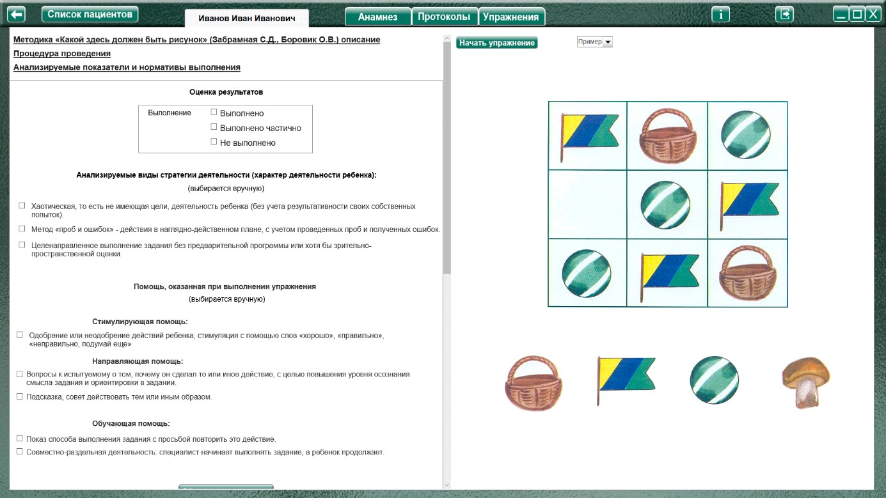
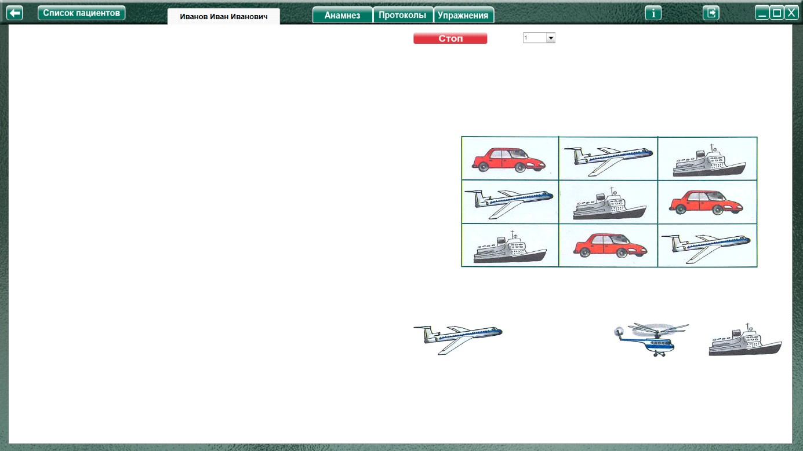
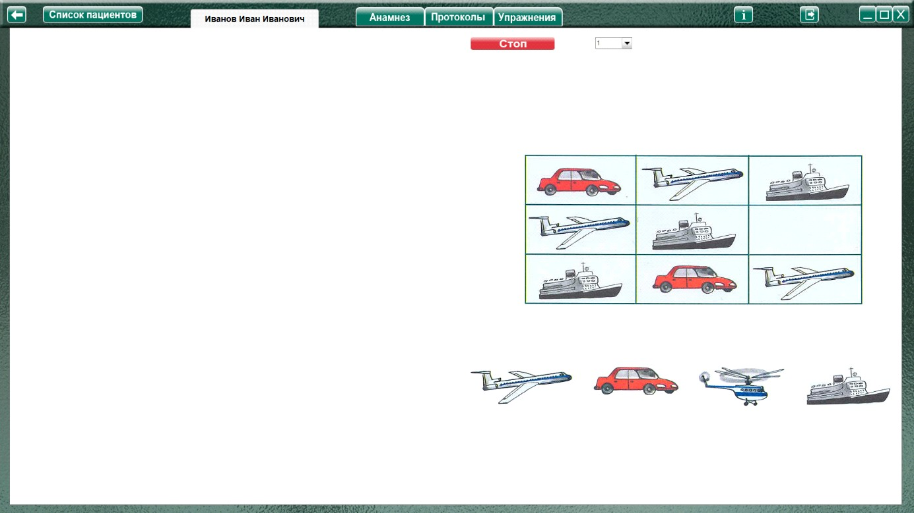

Методика "Какой здесь должен быть рисунок"
(Забрамная С.Д., Боровик О.В.)
Методика "Какой здесь должен быть рисунок" (Забрамная С.Д., Боровик О.В.) описание
Процедура проведения.
Анализируемые показатели и нормативы выполнения
Дети с нормальным умственным развитием в 6—7 лет имеют разный уровень сформированности аналитико-синтетической деятельности. Одни легко и быстро анализируют условия заданий наглядного характера, производят мысленно операции синтеза и устанавливают необходимые закономерности. Другие дети испытывают трудности при первом задании, но после указаний на допущенные ошибки и разъяснений они понимают общий принцип решения и пользуются им в последующих заданиях. Все дети проявляют ярко выраженный интерес к заданию.
Детям с задержкой психического развития нужна значительная помощь даже в 8-летнем возрасте.
Умственно отсталые дети это задание (особенно 2) не понимают и в более старшем возрасте (9—10 лет). Обучение оказывается малоэффективным.
Оценка результатов
Характер деятельности ребенка:
Виды возможной помощи:
Стимулирующая помощь
Направляющая помощь:
Обучающая помощь:
Протокол фиксации результатов исследования
_________________________________ _______________
ФИО Дата рождения
Методика |
Какой здесь должен быть рисунок |
Автор методики (адаптации, модификации) |
Забрамная С.Д., Боровик О.В. |
Цель: |
выявить сформированность операции сравнения; способность находить существенные признаки и мысленно синтезировать их по принципу аналогии; умение устанавливать закономерности; обучаемость. |
Дата / специалист |
|
Результат: вывод об уровне развития |
|
Примечание |
|
Процесс выполнения диагностической методики |
|
№ |
Факт выполнения / Время |
Характер деятельности ребенка |
Виды помощи помощи |
1 |
|||
2 |
Логика заполнения протокола
Заполняется автоматически
Имя специалиста – логин при входе в программу.
Дата – дата и время прохождения упражнения в формате дд.мм.гггг. чч:мм
Факт выполнения (выполнено, не выполнено.) / заполняется в зависимости от выбора в разделе оценка результата.
/ Время - время, затраченное на прохождения задания.
Ячейки «Характер деятельности ребенка», «Виды помощи» заполняются в зависимости от проставленных чекбоксов в разделе «Оценка результатов» или заполняются специалистом.
Остальные ячейки заполняются (правятся) специалистом самостоятельно.
Выполнение упражнения.

Перед началом выполнения упражнения нужно выбрать в меню пункт «Пример», нажать кнопку «Начать упражнение» и показать ребенку выполнение задания. Недостающий фрагмент переместить мышкой с зажатой левой кнопкой. После окончании демонстрации нажать «Стоп» (это задание не оценивается и не вносится в протокол), выбрать в меню задание 1 и нажать кнопку «Начать упражнение»


Выполнить задание согласно пункту «Процедура проведения» (переместить нужный фрагмент при помощи мышки с зажатой левой кнопкой).
По окончании упражнения специалист нажимает кнопку «Стоп», открывая область оценки результата. При необходимости выбрать факт выполнения, характер деятельности, виды помощи, и нажать кнопку «Сформировать протокол». Произвести оценку результата (заполнить оставшиеся ячейки протокола) согласно пункту «Анализируемые показатели и нормативы выполнения».
Только после формирования протокола по выполненному заданию можно приступить к выполнению следующего!
Для продолжения выбрать в меню следующее задание и нажать кнопку «начать упражнение»